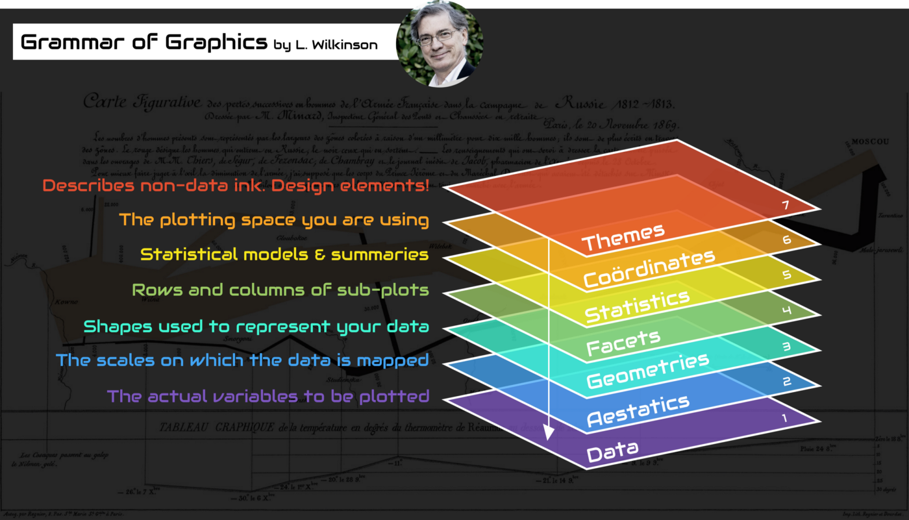
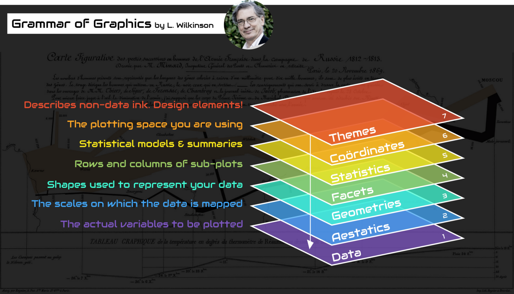
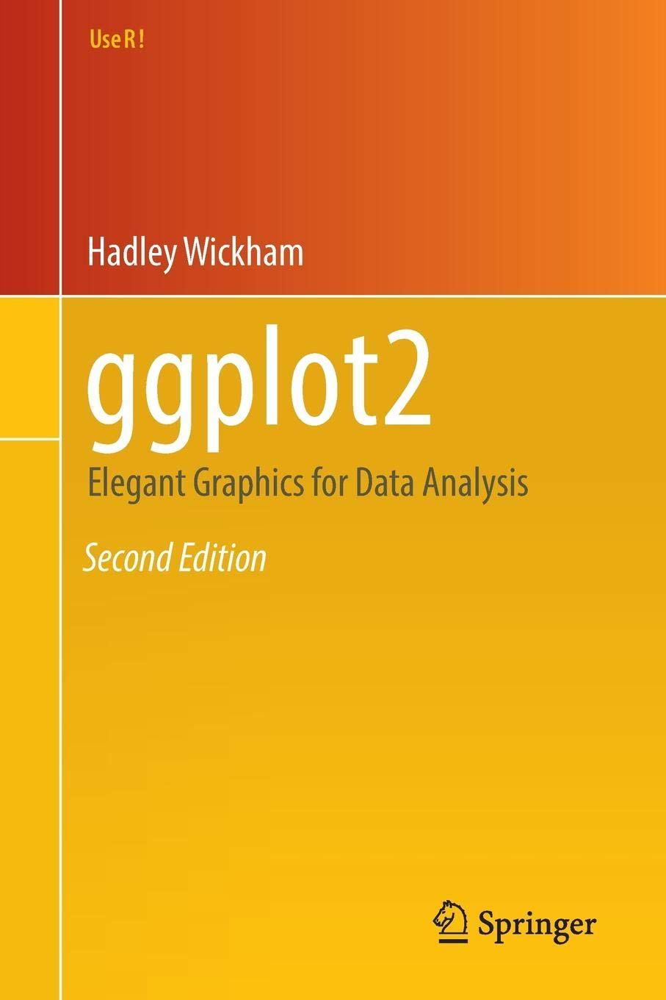
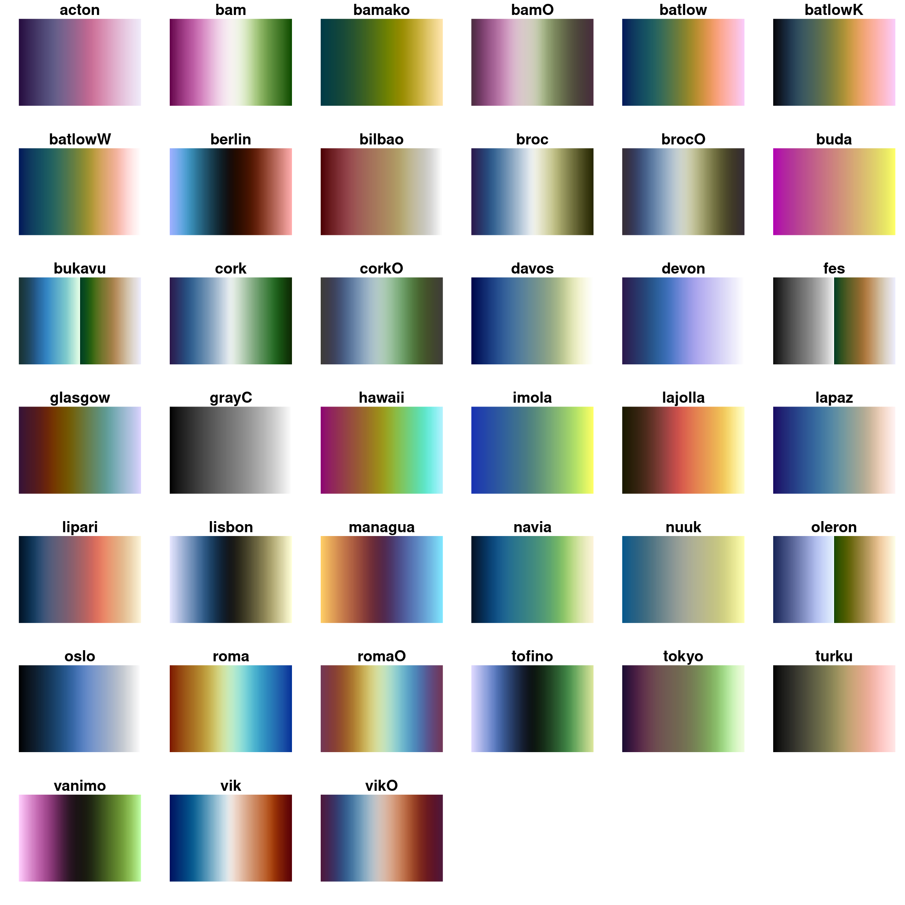
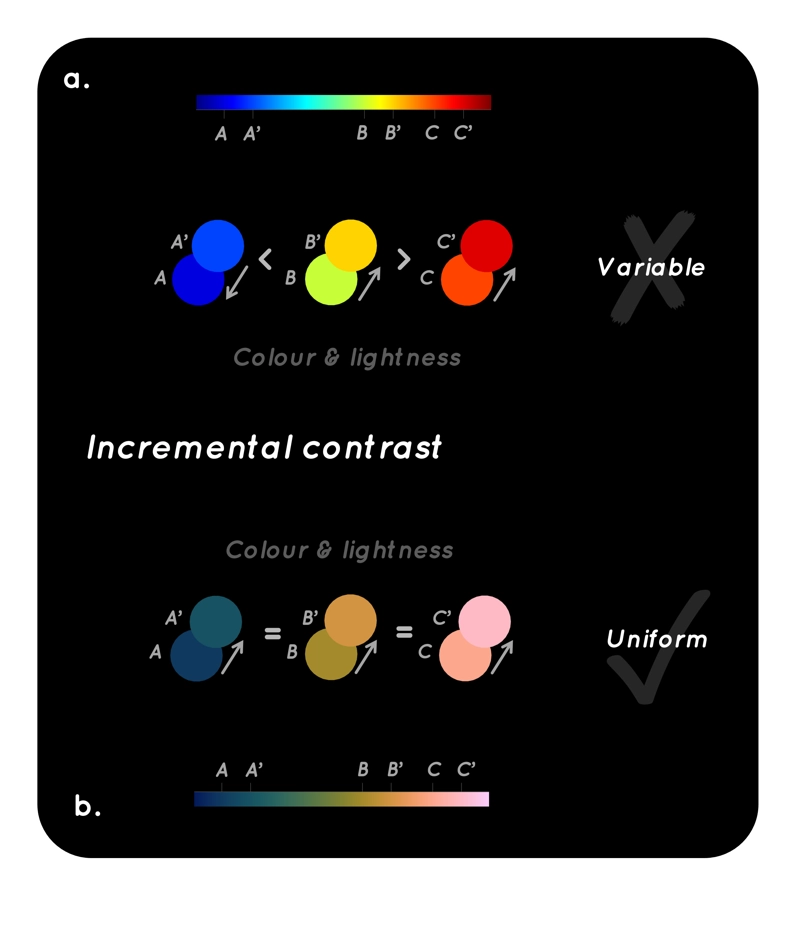
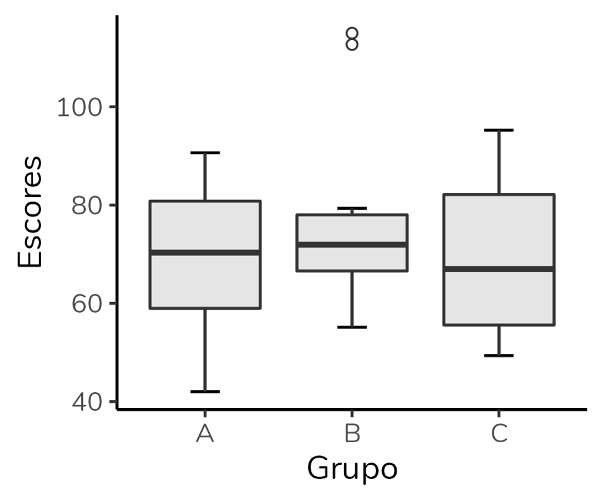
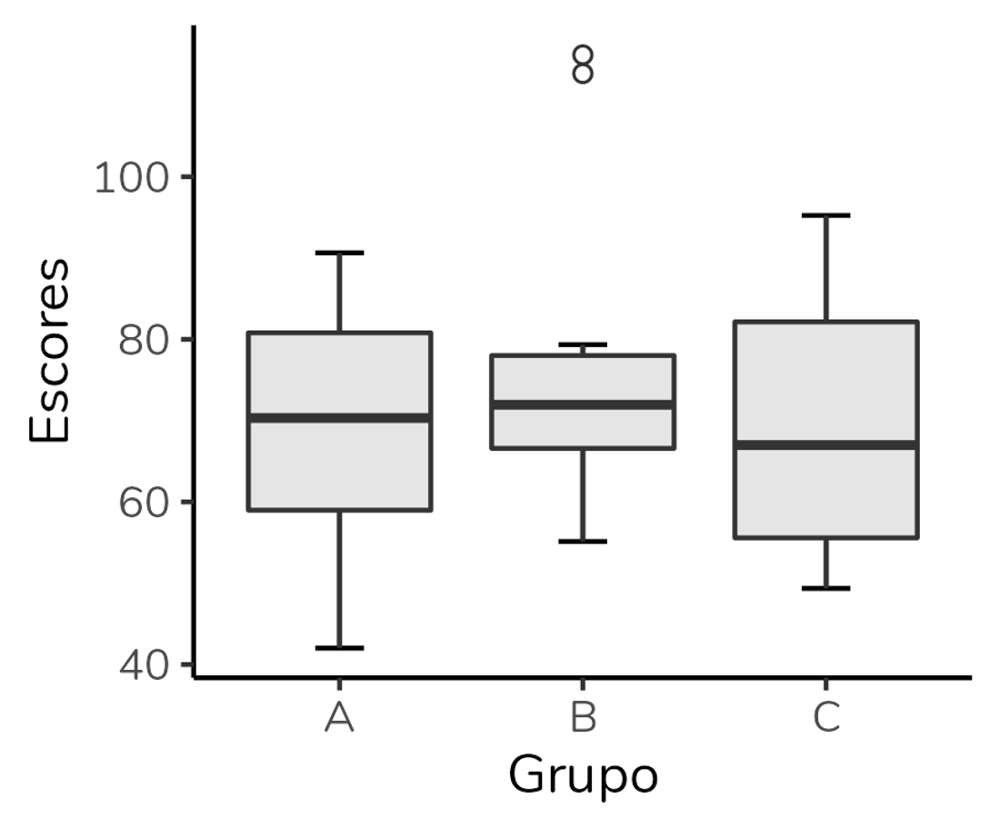

Visualização de dados em R
NT265/NE441 - Análise de dados e apresentação de gráficos usando a linguagem R
12 de novembro de 2025
Repositório do GitHub
https://github.com/mauriciovancine/workshop-r-data-visualization
Como mentir com estatística?


palmerpenguins


Descrição
Wilkinson (2005) Grammar of Graphics: representação gráfica dos dados a partir de atributos estéticos (do inglês aesthetic)
 

Camadas (layers)

ggplot2
Wickham (2008) criou o pacote ggplot2, onde “gg” representa a contração de Grammar of Graphics
 
Paleta de cores
Tipos de paletas de cores
| Tipo | Uso | Exemplo |
|---|---|---|
| Categóricas | Categorias sem ordem | RColorBrewer::brewer.pal(3, "Set2") |
| Sequenciais | Dados ordenados (baixa → alta) | viridis::viridis(10) |
| Divergentes | Valores centrados em um ponto médio | RColorBrewer::brewer.pal(11, "RdBu") |

Paleta de cores
scico
- Escalas de cores uniformes (n = 39), ideais para dados contínuos
- Compatível com
ggplot2, mapas e gráficos acessíveis e consistentes
  
Paleta de cores
cols4all

Elementos de um gráfico
Representações das colunas (eixos) e linhas (elementos)

Tipos de variáveis


Tipos de variáveis e tipos gráficos

Tipos de variáveis e tipos gráficos

R CHARTS

Histograma (Histogram)
Representa dados de uma coluna
Dados do tipo discreto ou contínuo
Distribuição de frequência ou densidade


Histograma (Histogram)


Densidade (Density)

Histograma (Histogram)
graphics

Gráfico de barras (Bar plot)
Gráfico dinamite (Dynamite plot)

Gráfico de barras (Bar plot)
Gráfico dinamite (Dynamite plot) - alternativas

 
 

Gráfico de caixas (Box plot)
Representa dados de duas colunas
Dados do tipo categóricos: X = categórico e Y = contínuo
Resume informações de medidas contínuas para dois ou mais fatores categóricos

Gráfico de caixas (Box plot)
Intervalo inter-quartil (interquartile range - IQR)
Limite inferior e limite superipor (1.5 x IQR)
Valores exteriores (outliers)


Gráfico de caixas (Box plot)

Gráfico de caixas (Box plot)

Gráfico de caixas (Box plot)

Gráfico de caixas (Box plot)

Gráfico de caixas (Box plot)

Gráfico de caixas (Rain plot)
ggdist

Gráfico de dispersão (Scatter plot)
Representa dados de duas colunas
Dados do tipo categóricos: X = contínuo e Y = contínuo
Plota a relação entre duas variáveis contínuas

Gráfico de dispersão (Scatter plot)
Same Stats, Different Graphs: Generating Datasets with Varied Appearance and Identical Statistics through Simulated Annealing
Justin Matejka, George Fitzmaurice

Combinando gráficos
ggplot2
ggplot_boxplot <- ggplot(data = penguins,
aes(x = species, y = flipper_length_mm, fill = species)) +
geom_boxplot(width = .3,
show.legend = FALSE) +
geom_jitter(alpha = .5,
show.legend = FALSE,
position = position_jitter(width = .1, seed = 0)) +
scale_fill_manual(values = c("darkorange", "purple", "cyan4")) +
theme_bw(base_size = 15) +
labs(x = "Species", y = "Flipper length (mm)")
ggplot_boxplot
Combinando gráficos
ggplot2
ggplot_scatterplot <- ggplot(data = penguins,
aes(x = bill_length_mm,
y = bill_depth_mm,
color = species,
shape = species)) +
geom_point(size = 3, alpha = .8) +
scale_shape_manual(values = c(19, 15, 17)) +
scale_color_manual(values = c("darkorange", "purple", "cyan4")) +
theme_bw(base_size = 15) +
labs(x = "Comprimento do bico (mm)",
y = "Profundidade do bico (mm)",
color = "Espécies", shape = "Espécies")
ggplot_scatterplot


Gráficos animados
gganimate
# pacote
# install.packages("gganimate")
library(gganimate)
plot_animate <- ggplot(data = penguins,
aes(x = bill_length_mm,
y = bill_depth_mm,
color = species)) +
geom_point() +
scale_color_manual(values = c("darkorange", "purple", "cyan4")) +
theme_bw(base_size = 15) +
labs(x = "Comprimento do bico (mm)",
y = "Profundidade do bico (mm)",
color = "Espécies", shape = "Espécies") +
labs(title = "{closest_state}") +
transition_states(species) +
enter_grow() +
exit_fade()
plot_animate
Gráficos animados
gganimate


Gráficos usando interface
esquisse

Gráficos usando interface
esquisse - Shiny